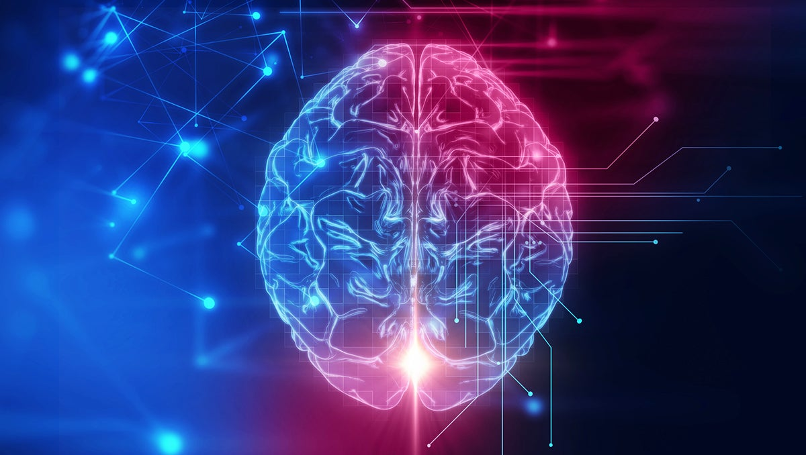
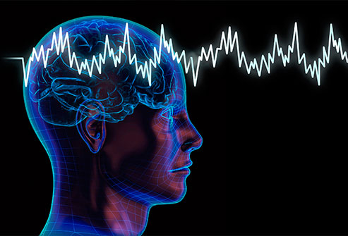

Dopamine. Wait before we dive into that, listen carefully,This is a Freestyle project by the Local Host and this webpage or website is static.
This local web may lack advanced CSS and no js at all. Know that it's a freestyle so don't expect any thing fancy.
Dopamine, am sure by now many readers have heard or see it in an article,book or on screen. But for those who have no idea about dopamine let me save you
Dopamine by the Wordweb dictionary states 'dopamine is an monoamine neurotransmitter found in the brain and essential for the normal functioning of central system'
Dopamine is therefore a kind of neurotransmitters that occurs in our Brains. Dopamine play a huge role in our lives , without it we will be like trees with no feeling
Here are a list of Dopamine feelings;
- Reward feelings
- Loneliness feelings
- Guilt feelings
- Anger feelings
- Etc.
Let's Consider Two Of the Listed Dopamine Feelings
Reward Feelings
We all feel good after accomplishing a goal or getting something we dearly need. But have You ever thought of what feeling the dopamine brings or carry to us. Well it's the Reward Feelings,
The brain automatically detect what you are desperate about, then it bottles up the reward feelings, the moment you achieve your goals or get what you want,
The dopamine carrying the reward feeling immediately shoots and spread throughout your body to make you feel a sense of accomplishment
Guilt Feelings
We all feel guilt. Often from our mistakes or deliberately implanted guilt by manipulators. But here is the kicker,its all about dopamine
Be it deliberate or genuinely, the brain detects the current situation around you ,after analysing it sends data to the dopamine , the dopamine picks guilt feelings and sends it to you